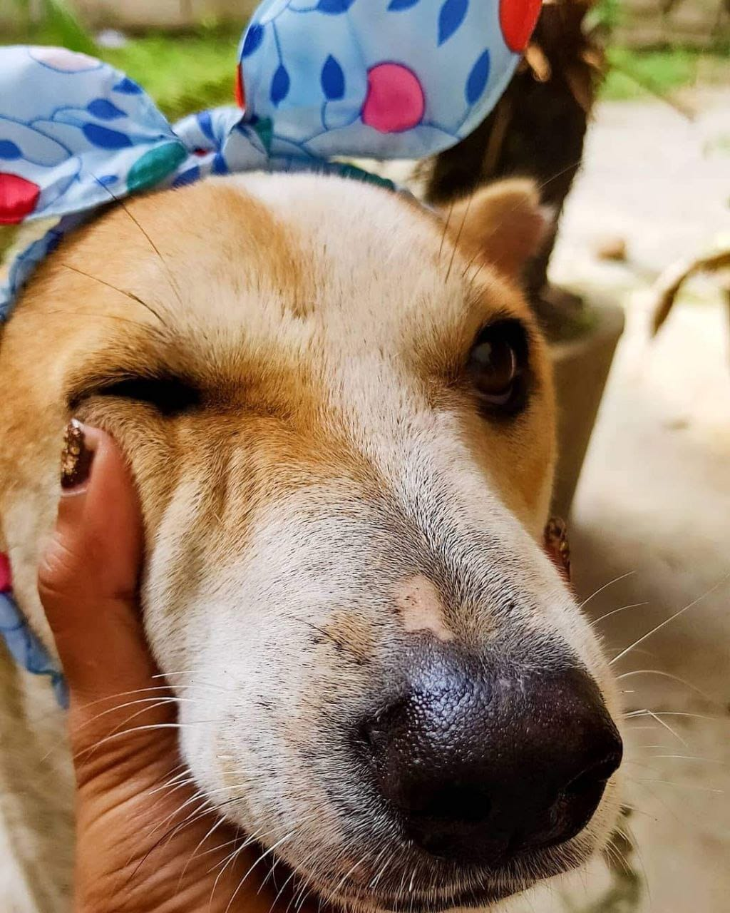

Phoring is the tiniest whirlwind of joy and chaos wrapped in fur—truly the naughtiest kid you’ll ever meet. Small in size but bursting with personality, he has a way of turning every quiet moment into an adventure. Once, in one of his daring little escapades, he broke his leg. It was heartbreaking, but that moment brought us even closer.
Once upon a time i rescued him, but truthfully, he rescued me right back—with those soulful eyes and that stubborn spark that refused to dim. Now he stays with me, ruling the house like the true bangtabaccha he is. Every little hop, every mischievous tail wag, every snuggle reminds me just how much love can fit in one small body.
Phoring AKA Bangta Baccha
Doggy Don
Mithai : The Aurat
This is Mithai—a certified sweetheart with a master’s degree in mood swings and a black belt in “Ghor Theke Palano.” She didn’t grow up with us, but from the moment she trotted in at age two, she made it very clear: this is her house now. One minute, she’s a cuddly marshmallow; the next, she’s staring out the gate plotting her next great escape like a canine Bond girl. But don’t let the sass fool you—behind those clever eyes is a brilliant, gentle soul who just wants love, snacks, and the freedom to ignore you dramatically every now and then. Queen behavior? Absolutely.
Kueen with a 'K'
Hiru
This is Hiru, my sweet, obedient little star—an indie girl with a heart so pure, it felt like she came straight from the sky just to love us a while. She never needed a command twice, always ready with calm eyes and gentle paws, as if she understood the world better than most humans do. I lost her in 2023, but her memory sits beside me every day—quiet, loyal, warm. They say dogs don’t stay forever, but with Hiru, it feels like a part of her never really left. She was the kind of good that stays.
The Angel
Gunda
Meet Gunda—yes, the Gunda of the locality. Back in the day, he was just a tiny pup with oversized ears and a bark that squeaked. But don’t be fooled by this baby-faced photo—today, he’s a full-grown man (oops, sorry Gunda... dog), and the unofficial night watch of the neighborhood. Rain or thunder, 2 AM or 4—if I’m outside, he’s right there, standing guard like a furry little bodyguard with attitude. He may chase away strangers, but to me? He’s just my ride-or-die in a fur coat.
The "Vow-king"
Bulbuli
Say hello to Bulbuli—the tiniest tornado in a tail-wagging gang that lives just outside my home. She’s the youngest of the pack, but don’t let that fool you—she’s got more mischief in her paw than the rest combined. Clumsy as ever (yes, she once tripped over her own excitement), sweet like a dropped biscuit, and cheeky enough to steal the spotlight—and probably someone’s snack. Every day and night, I feed her crew, but it’s Bulbuli who steals my heart with those puppy eyes and her never-ending quest to turn dinner into a full-blown comedy show.
Heroine

Gini
This is Gini, my brave, brilliant girl. I rescued her once, but somehow, it feels like she rescued me a thousand times over—with her gentle eyes, her quiet wisdom, and the kind of loyalty you never forget. Sweet, cute, and sharper than most people I know, Gini never needed to be told twice—she just knew. Whether it was a look, a word, or silence, she was always in sync with me. Though she’s gone, she left behind a silence that still feels full—of love, of memories, of everything she was. Gini wasn’t just the best dog I ever knew—she was the best kind of heart.
OG Angel
Pappu
This is Pappu, the sweet little wanderer I first met at Station. He was always roaming around, getting into mischief and spreading joy wherever he went. I’d often pet him and feed him, but he was a free spirit, never staying in one place for too long. Eventually, the kind folks at the station garage adopted him, and now Pappu calls that place home. He’s still there, living his best life, but I’ll always remember the little explorer who brightened up my day every time I saw him.
Pup!Bhu!
Lucky
Meet Lucky, the indie with more energy than a tornado on a sugar rush! He lives at my friend's house, and every time I visit, I know I’m in for a wild ride. Lucky’s got one mission in life: to bite everything in sight. Shoes, fingers, the air—if it moves, it’s fair game. But despite his dangerously playful antics, there’s no denying—he’s kind of cute. With that mischievous grin and endless enthusiasm, he manages to get away with it all. Just don’t turn your back, or you might lose a sock to the ultimate sock thief!
Razor Blade
Bhodu
This is Bhodu, the neighborhood’s official heart-stealer. Just look into those eyes—how could you not fall in love? He’s the sweetest pup you’ll ever meet, always ready with a wagging tail and a heart full of love. Bhodu’s the kind of dog who welcomes everyone like they’re his best friend, even if you’re not a “dog person.” His gentle soul and undeniable cuteness have a way of melting even the toughest hearts. If you ever need a reminder of what pure, unconditional love looks like, just look at Bhodu.
CutiePIe
Khaleesi
Meet Prajna Targaryen—aka Khaleesi, Mother Of the Dogs the paw-some member of the pack! If you don’t believe me, just listen closely... Bhow Bhow bhow! Yep, that's Prajna in full action—always ready to bring the joy, the play, and the occasional "bark" of excitement. Whether it's chasing after a toy or just cuddling up for a nap, Prajna brings the kind of energy that turns any day into an adventure. Don’t be fooled by the cuteness, though—this dog has a heart as big as the moon and enough charm to melt anyone’s heart. Who's a good dog? You are, Prajna!